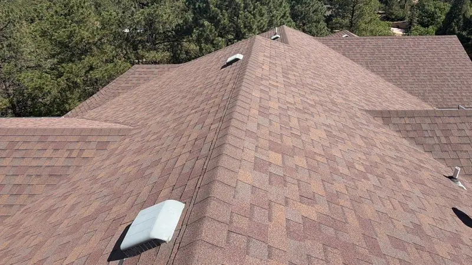
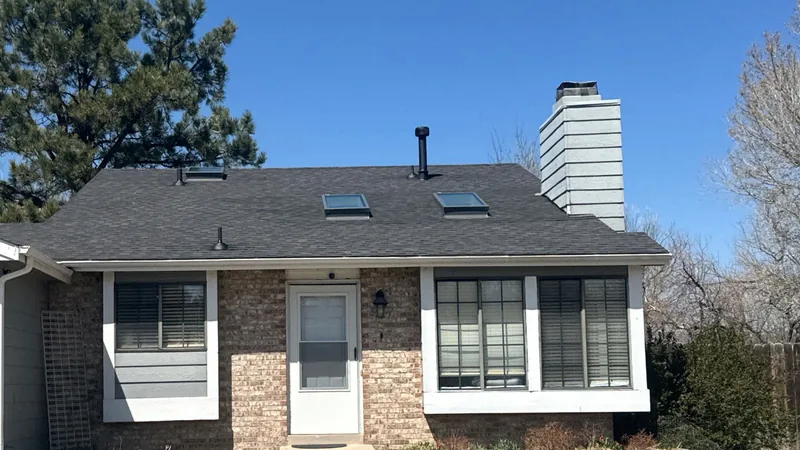
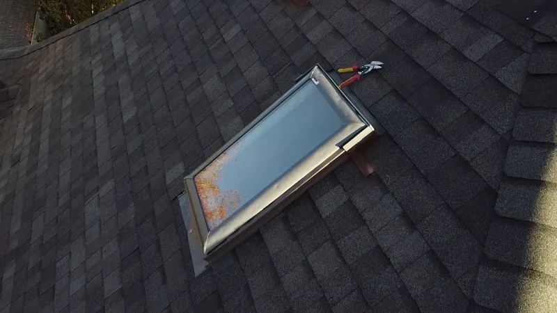

Anderson County, TN
Roofing contractors for Anderson County
Anderson County is where TVA started. Norris Dam came first, then the town of Norris, then Oak Ridge. Each one left behind its own kind of house, and its own kind of roof problem.

- Family roofing company. Since 2018.
- 4,000+ projects documented. On record, job by job.
- Free inspections. Written, line-by-line prices.
- 24-hour emergency line. Leaks and storm damage, any hour.
- All of East Tennessee. Twelve counties, one phone number.
City lines decide the office
Anderson County's government sits in Clinton (Anderson County). Clinton and Oak Ridge are both cities with their own governments, Oak Ridge reaches into Roane County, and Norris and Rocky Top are incorporated too. The county office covers the ground outside those city lines.
So the first job on any Anderson County roof is matching the parcel to its office. In Oak Ridge that means the city's Community Development department (City of Oak Ridge); the city's cemesto houses have their own page. We make that call before we price, and any permit fee is a separate line on your quote.
What Anderson County roofs face
Norris Dam on the Clinch River was TVA's first major project, finished in 1936. Its lake runs about 73 miles up the Clinch and 56 up the Powell, with some 800 miles of shoreline (Wikipedia). Cabins and lake homes line that shore on steep, wooded lots, many down gravel drives. Shade keeps their north slopes damp, so moss and algae get a head start, and limbs hang over plenty of them.
The town of Norris was built in the 1930s to house the dam workers (Wikipedia). Those houses are close to ninety years old, so expect original decking, chimneys and several generations of patches on each roof.
Clinton has older blocks near the courthouse and the Clinch, and a band of postwar houses and subdivisions spreading toward I-75.

Getting to you
I-75 runs up the county's east side past Clinton and Rocky Top, and TN-61 heads from Clinton toward Norris and the lake. The marinas and cabin roads at the north end are the long drive, so we line those up with other stops nearby.
Photos by text help most here, because a steep cabin roof under trees is hard to judge from the ground. If a limb has opened the roof, call (865) 830-8126 day or night.

Towns we serve in Anderson County
Also: Clinton, Norris, Rocky Top, Andersonville and Briceville.
Common questions
Can you get a crew and materials down a steep cabin drive?
Usually, with planning. At the inspection we look at the drive, the turnaround and where a trailer can sit, and pick the truck to match. If a big delivery can't reach the house, material comes in smaller loads.
Is moss on my Norris Lake cabin roof a problem?
It can be. Moss holds water against the shingles and lifts their edges as it grows. A gentle cleaning and cutting back the shade helps a roof that has life left. If the shingles underneath have gone soft, it's time to price a replacement.
Do you work on cabins and rental properties?
Yes. Cabins and rental homes are welcome, and they often have steep pitches and metal roofs, both of which we work on. A property manager can book an inspection for a place they don't live at; just give us the address and how to reach the yard. If you look after more than one property, each gets its own written price.
Why are there black streaks on my roof?
That's almost always algae. Knoxville gets about 52 inches of rain a year and stays humid all summer, and algae grows on shady, north-facing slopes. It's mostly cosmetic. Pressure washing strips granules and shortens the roof's life, so don't. When you replace, an algae-resistant shingle keeps it away longer.
Get a free look at your Anderson County roof
Four boxes. We'll call you back to pick a time.
Rather talk? Call (865) 830-8126. Rather text? Send a photo.